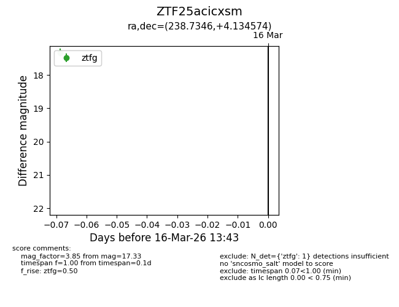
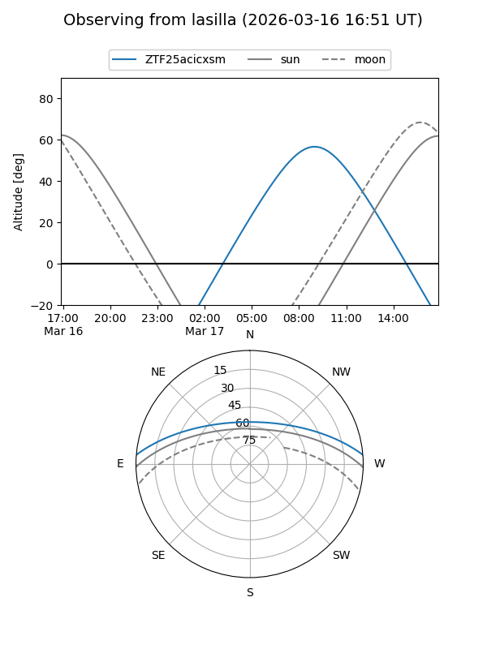
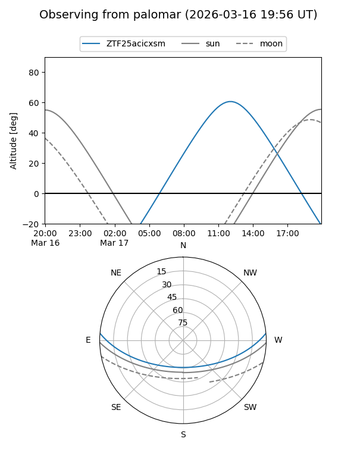

ZTF25acicxsm
Target ZTF25acicxsm at 2026-03-16 13:45
Aliases and brokers:
FINK: link
Lasair: link
ALeRCE: link
alt names
ZTF25acicxsm (ztf,fink_ztf)
Coordinates:
equatorial (ra, dec) = 238.7346,+4.13457
equatorial (HMS+DMS) = 15:54:56.31,+04:08:04.47
galactic (l, b) = (13.5074,+40.60909)
Flags:
Photometry:
last ztfg=17.33
1 ztfg detections
Lightcurve

Visibility


Additional plots